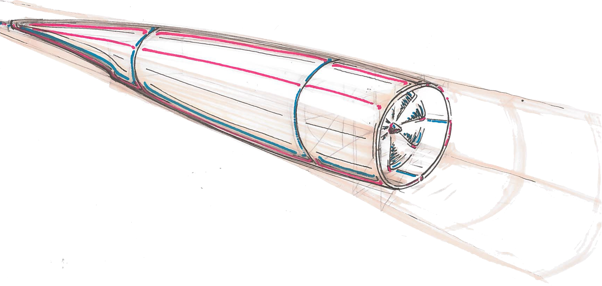

Design
Our Engineers and Designers have taken the greatest care to ensure that the HypEd pod is both comfortable and efficient. It was imperative that while designing the pod no compromises were made in either category, and after running innumerable tests and simulations we believe our designs represent some of the best available solutions technically feasible.

Technology
Using air bearing technology the pod will hover on a cushion of air inside the tube, allowing it to glide along with minimal resistance. The pod will travel at nearly the speed of sound, which will make it the fastest commercially available form of ground transport.
Electronics
Advanced electronic systems will allow the pod to fly autonomously while simultaneously transmitting detailed flight information to the base station for constant monitoring throughout the journey. Each pod will also be equipped with number CCTV cameras to ensure passenger security throughout the journey.